黑苹果安装步骤简记
最近突然对安装黑苹果系统很感兴趣，就上网找了一些资料来看看，下边简单记录一下我的收获。以下操作都在虚拟机中进行。工具软件在这里(显示不出来了，可以直接到tonymac.com下载)
今天无意间发现大神们整理的资源，然后刚好和我的一台台式机型号匹配，打算有时间的时候操刀试试。
目录
{:toc}
1. 下载镜像
我在win里边装了一个macos的虚拟机，在app sotre中下载的mojave镜像。不过下载的时候有一个小插曲，我虚拟机装的是10.11.6的，在app store中只能下载22.8MB的一个在线升级工具，最后通过这个工具下载到了完整的6G+的镜像。此外其他版本的完整镜像也可以通过这个工具下载。
2. 制作启动U盘
制作启动U盘有很多中方式，前题是U盘必须转换为GUID格式。
- windows 下可以使用transmac软件制作
- 使用镜像中的工具制作
- 使用tonymacx86论坛提供的UniBeats工具制作
格式化U盘
在虚拟机中新建一个大小为10G的硬盘，插入后MacOS会检测到，然后点击Initialize...
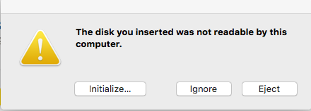
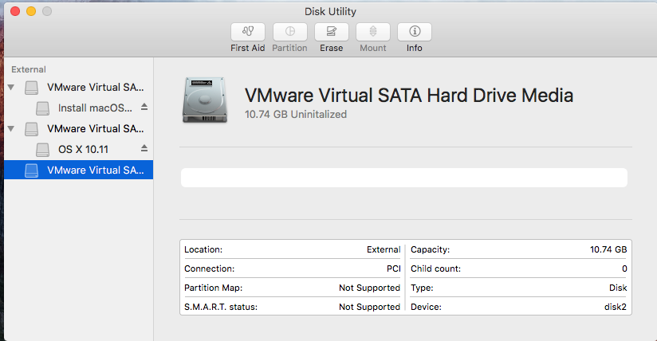
左边选择好要擦除的硬盘后，点击上方的Erase
Name随便写，Format选择OS X Extended， 最后一行的Scheme 一定选GUID
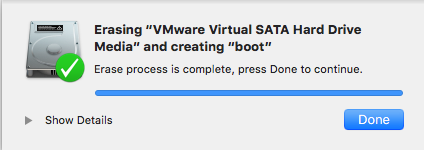
方式一：使用镜像中的工具制作
命令如下 :sudo /Applications/Install\ macOS\ Mojave.app/Contents/Resources/createinstallmedia --volume /Volumes/Mojave /Applications/Install\ macOS\ Mojave.app --nointeraction
其中 第一项：/Applications/Install\ macOS\Mojave.app/Contents/Resources/createinstallmedia 指的是下载好的镜像中的工具的路径；
第二项：--volume /Volumes/Mojave 指定U盘位置
第三项：/Applications/Install\ macOS\ Mojave.app 整个安装包的路径
操作步骤如下
- 右键点击下载好的
Mojave镜像，选择Show Package Contents， 然后找到Contents -> Resources -> createinstallmedia文件，直接拖动放入Terminal； - 输入
--velume /Volumes/you_disk可以通过tab键补全路径名； - 点击返回按钮，返回到没有打开镜像的地方，拖动镜像放入
Terminal中； - 输入密码，输入
Y，开始刻录U盘； - 刻录完成；
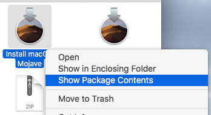
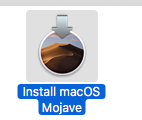
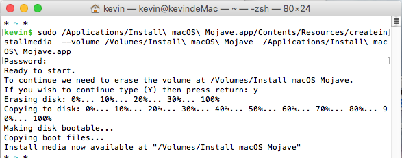
此种方法刻录的U盘好像不用再用Clover写入引导，我在虚拟机中测试可以引导，具体情况还得到实体机上测试。
方案二：windows下使用transmac软件制作 --TODO
下载安装后会在桌面生成快捷方式。右键以管理员身份打开。
方案三：使用UniBeats工具制作
注：使用的工具都在
tonymacx86.com下载，下载需要登录，注册需要使用国外的邮箱，我使用了gmail。
先在虚拟机中分了一个10G大小的硬盘当做的我U盘，挂载到Mac的虚拟机后格式化为GPT分区格式。
然后打开UniBeast工具开始制作。
此软件要求系统语言是英文，所以如果系统语言不是英文会要求更改，只需打开系统偏好设置 然后将英文拖动到第一位，点击重启就好了。
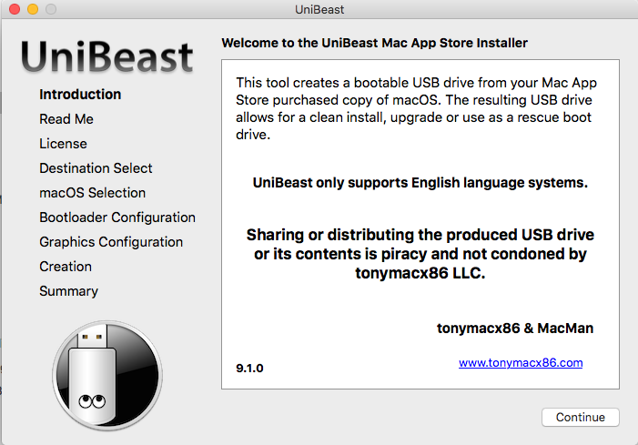
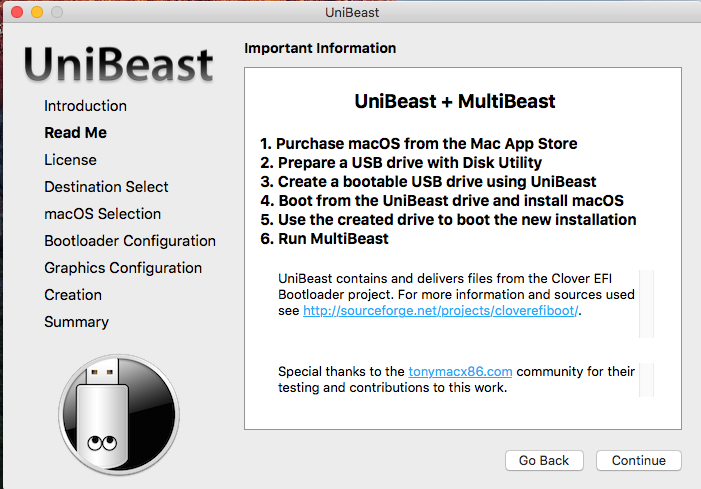
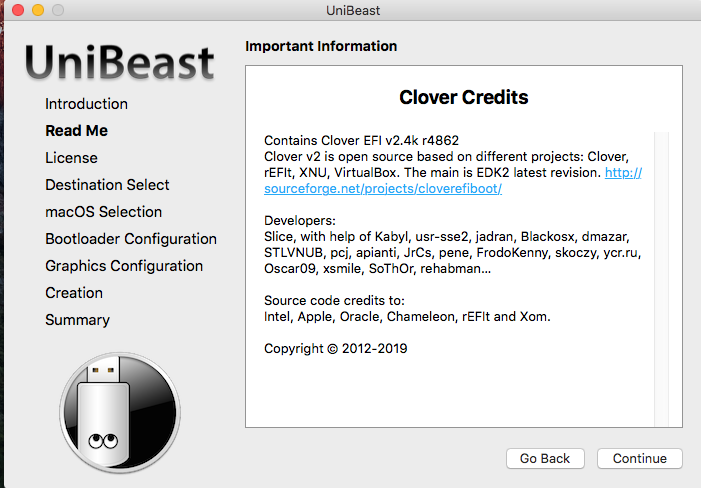
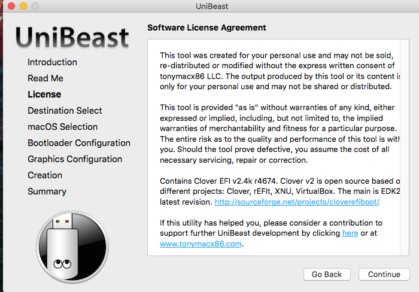
点击Agree
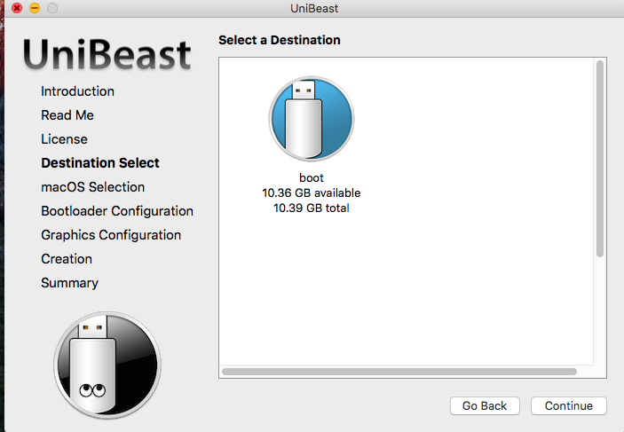
选中U盘，我这里前边把U盘命名为boot
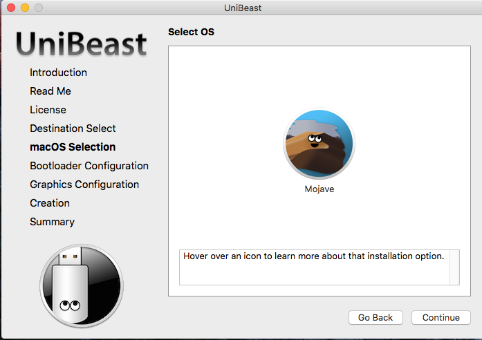
选中要刻录的系统，这里的Mojave系统要拖动到Application目录中才能自动识别出来。
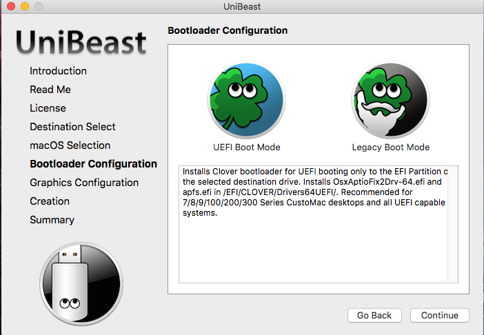
选择UEFI引导模式。
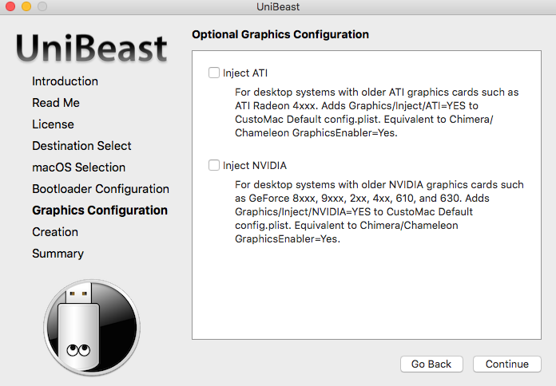
注入显卡驱动
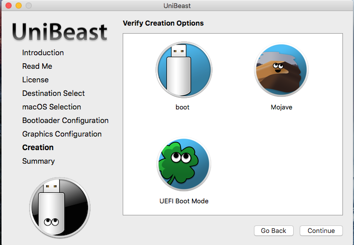
开始拷贝文件
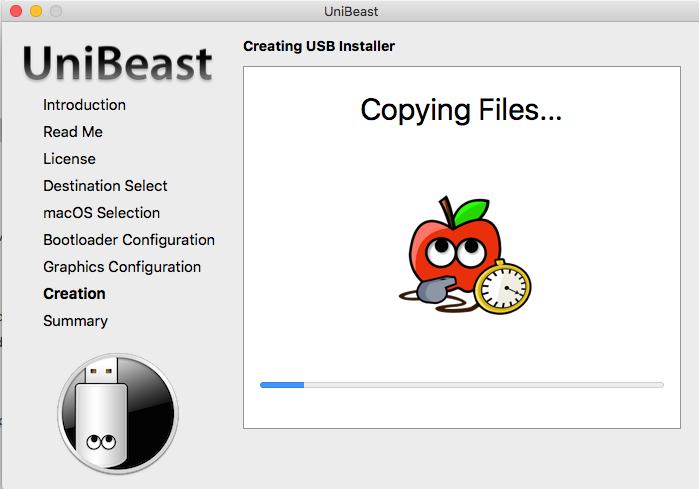
制作完成后桌面会多出来一个EFI分区。
写入Clover引导
打开Clover开始写入引导。
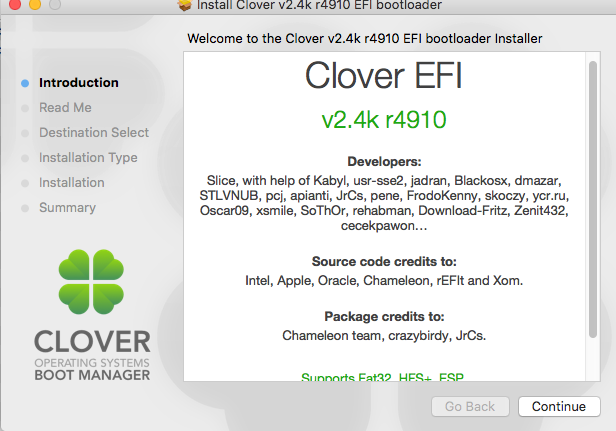
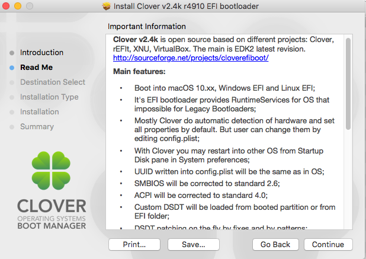
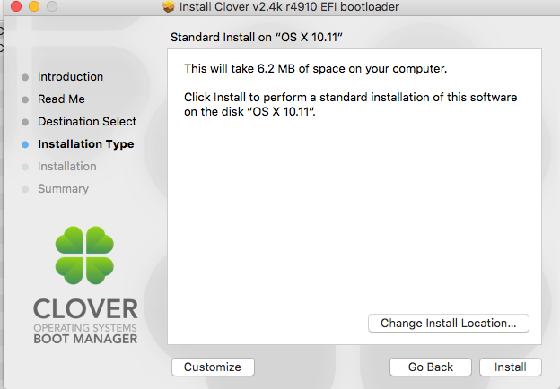
这里要选择Change Install Location...
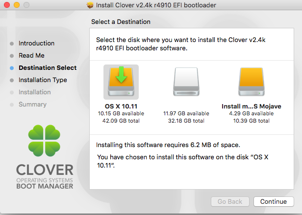
选择Install ... 这个是写入镜像后的U盘，名字变了可以通过分区大小区分。然后点击Continue
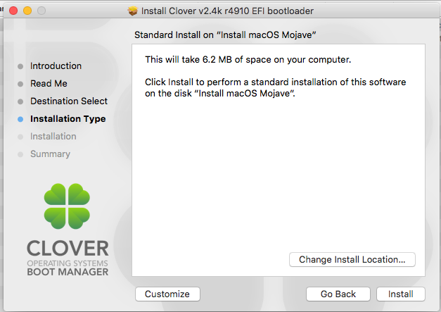
点击Customize 进入配置页面，选择一些必要的驱动，点击Install
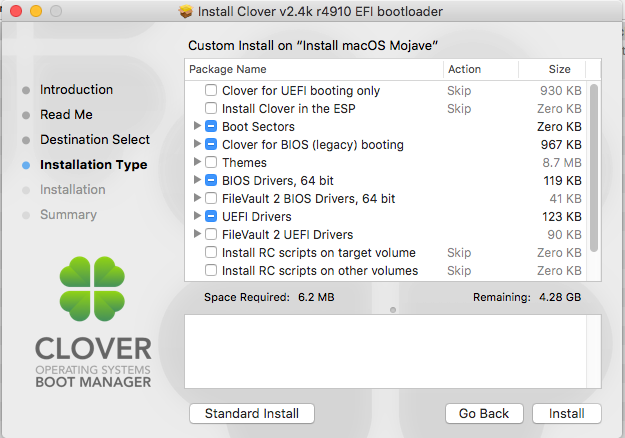
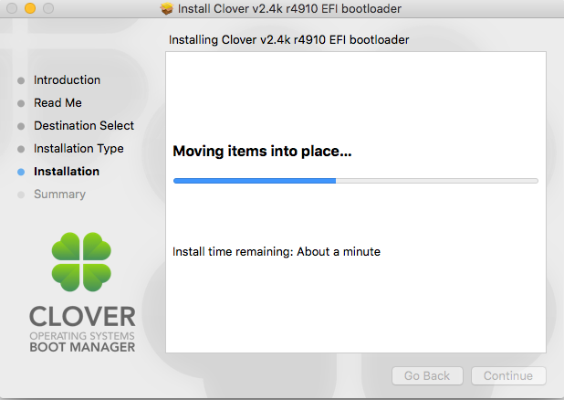
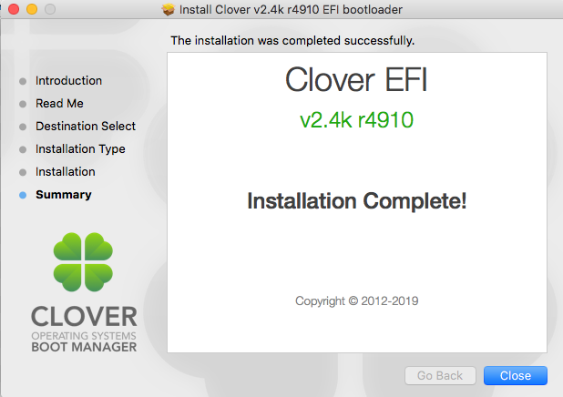
关闭虚拟机，在虚拟机重启时进入BIOS,选择做好的U盘引导系统。
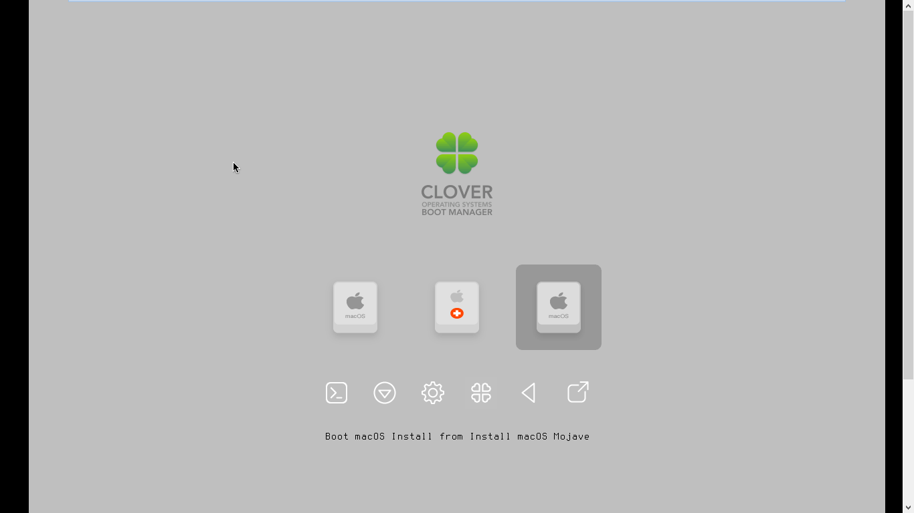
3. 配置Clover
使用前边制作好的U盘就可以插入电脑从U盘启动了，接下来进入安装黑苹果最难的部分：配置Clover驱动。
使用Clover Configure软件进行配置。
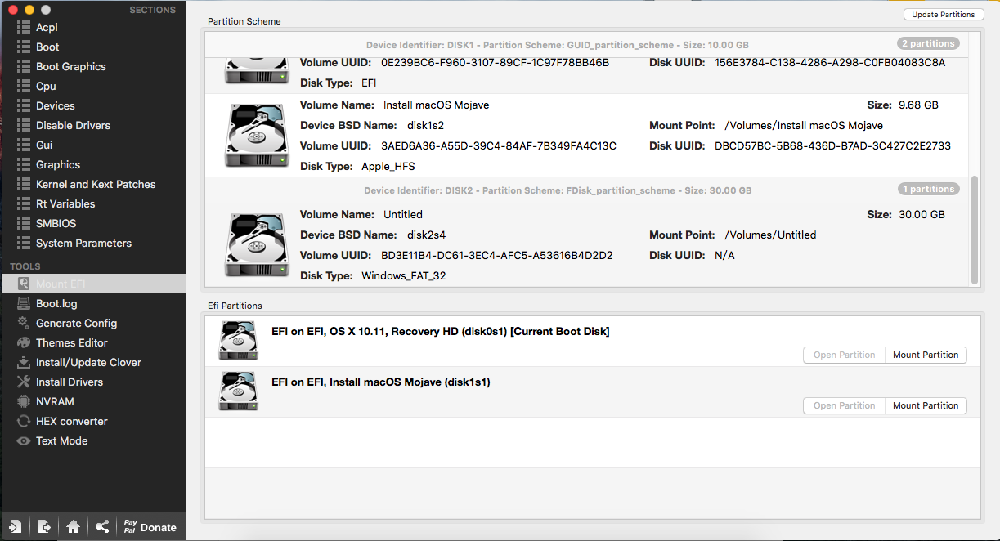
打开软件后，在左边找到Mount EFI 左下会出现可以挂载的EFI分区。点击Mount Partition -> Open Parition。如下图，选择EFI -> CLOVER -> config.plist 双击打开。
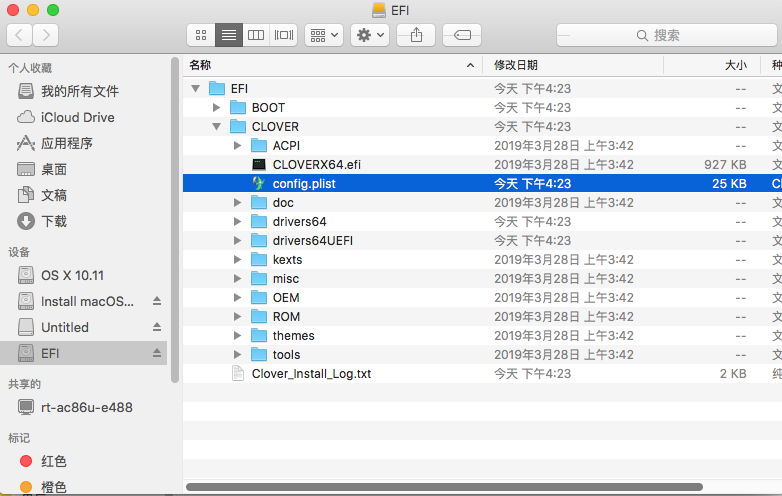
然后就进入了下边的配置界面。
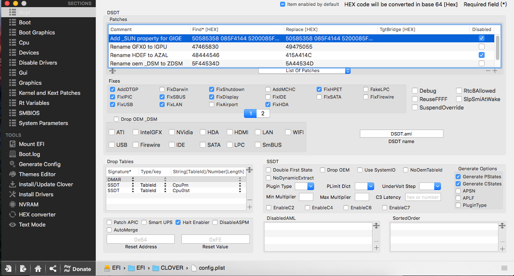
后边的内容需要在实体机上根据具体的硬件信息进行配置，暂时不看。